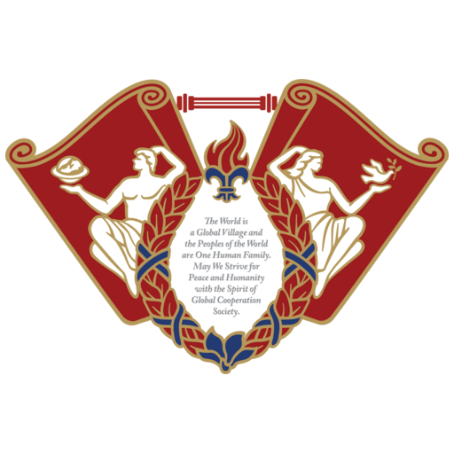
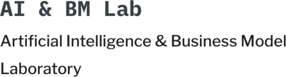

U.S. News Graduate AI #5GPA 4.0/4.0
AI Agent Developer
Sihun Wang
Agentic RAG, Tool Routing, LLM Evaluation, HITL을 활용해 실제 업무에 적용할 수 있는 AI Agent와 데이터 파이프라인을 개발합니다.
- 위치
- Seoul, South Korea
- 학력
- Georgia Tech MSCS AI
UIUC B.S. Statistics - 관심 직무
- AI Agent, Applied AI
01
학력
U.S. News 2027 Graduate AI
미국 최상위 AI 대학: Georgia Tech와 UIUC
U.S. News Graduate AI #6GPA 3.62/4.00
02
경력
최신순
Flitto
Operations Support Intern (AI)
- LG전자와 Olive Young 다국어 AI 번역 프로젝트에서 Fluency Agent를 개발하고 언어와 도메인별 Workflow Prompt를 최적화했습니다.
- LLM 품질 평가 체계와 Benchmark 기준을 수립하고, 도메인 전문가 기반 HITL 검증과 PoC를 운영해 외부 검수에서 97.5%의 무수정 통과율을 달성했습니다.
Korea Data Network
Data Pipeline Developer
- 국세청 API 기반 납세 여부 확인과 국가 농업통계 조사에 필요한 외부 데이터 수집, 식별자 Mapping, 검증, Excel 처리를 Python으로 자동화했습니다.
- API 조회 오류 보완, 예외 처리, 실행 로그를 구현해 약 3시간의 반복 업무를 최종 검증 10분 수준으로 단축했습니다.
Information Experience and Accessibility Lab
LLM Researcher
- 고령자 개인 맞춤형 건강정보 Agent를 위해 건강정보 조회와 논문 검색을 선택하는 Tool Routing과 Agent Workflow를 설계했습니다.
- Hybrid Search 기반 Agentic RAG Pipeline과 Benchmark 비교 실험을 구현해 답변 품질 점수를 75.3%에서 91.5%로 개선했습니다.

경희대학교 빅데이터응용학과
Teaching Assistant
- 대학원생 대상 Federated Learning 강좌의 실습 4회와 프로그래밍 과제 3개의 설계, 출제, 채점을 담당했습니다.

AI & BM Lab
AI Researcher
- ML과 DL 모델의 구조와 Layer별 Parameter를 분석하고 최소 Parameter 구성으로 모델을 경량화해 성능을 비교했습니다. Federated Learning 기반 CNN 연합학습으로 정확도 98%를 달성했으며 결과를 관련 포럼에 소개했습니다.
03
대표 프로젝트
Personalized Health Coach Multi-Agent
LangGraph Supervisor와 Diet, Exercise, Safety, Records Multi-Agent를 구현하고 Query Expansion, Hybrid Search, 근거 인용, Deterministic Safety Rules를 결합해 품질과 안전성을 검증했습니다.
LangGraph Multi-Agent, Supervisor Routing, Query Expansion, Hybrid Search RAG, MCP Tool Routing, Evidence Citations, Safety Rules
RepositoryMultilingual AI Translation Workflow
MQM 오류 분류, 카테고리별 전문 수정, 결정적 검증과 Rollback, OpenAI Escalation, HITL 승인을 포함한 번역 품질 Agent를 구현했습니다.
Translation Quality Agent, MQM Error Routing, Specialist Agents, LangChain LCEL, Ollama, Qwen3.5, OpenAI Escalation, Rollback, HITL
RepositoryTax and Agricultural Statistics Pipeline
API, Selenium, Beautiful Soup, OpenPyXL을 활용해 조사 데이터 수집과 검증, 문서 처리를 자동화했습니다.
Python, API Integration, Identifier Mapping, Fallback Logic, Exception Handling, Execution Logs, Selenium, OpenPyXL
AI Usage Bar
Claude와 Codex의 5시간 및 주간 사용량을 표시하고 Threshold Alert와 Usage Coach를 제공하는 macOS Menu Bar App을 개발했습니다.
Swift 6, SwiftPM, LaunchAgent, Swift Testing
Repository04
기술
- Agent Systems
- LangGraph Supervisor, Multi-Agent Subgraphs, Conditional Routing, Concurrent Execution, Tool Calling, MCP, Interrupt and Checkpointer
- RAG and Grounding
- Agentic RAG, Query Expansion, Hybrid Search, Semantic Search, BM25, Chunking, Evidence Selection, Citation Mapping, Grounded Generation
- Evaluation and Safety
- Benchmark Design, LLM-as-a-Judge, MQM, xCOMET, HITL, Deterministic Safety Rules, Rollback, Audit Logs
- Programming
- Python, Java, R
- Machine Learning and Deep Learning
- PyTorch, TensorFlow, CNN, RNN, LSTM, MLP, Linear Regression, XGBoost, KNN, Federated Learning, Model Compression, Statistical Analysis
05
기여와 수상
Applied Statistics with R
UIUC STAT 420 응용통계학 교과서 기여자
Upstage AI Stages ML Competition
아파트 실거래가 예측 Machine Learning 경진대회 Team 2위, 2026년 1월
UIUC Data Dive Team Competition
주가 데이터를 활용한 Machine Learning 분석 경진대회 Team 4위, 2023년 12월
Georgia Southern University Invitational Mathematics Tournament
개인 2위, 단체 1위, 2017년과 2018년